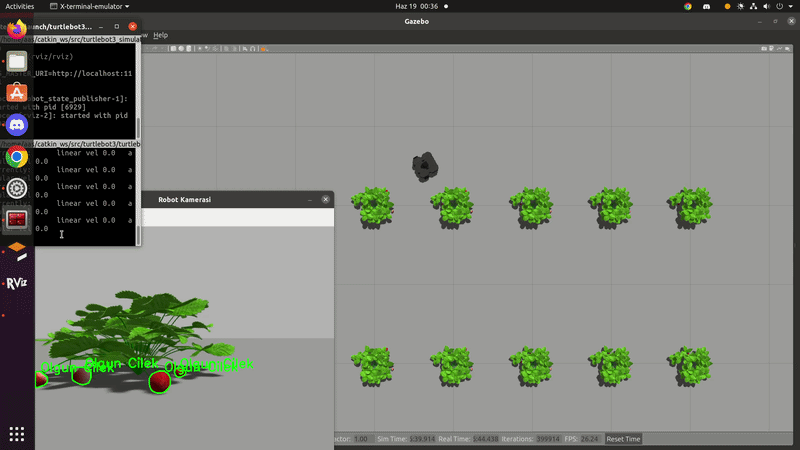
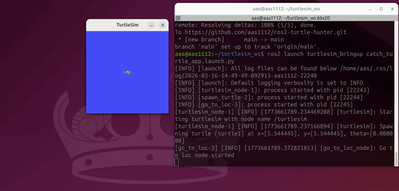

Otonom tarım için ROS, Gazebo ve YOLOv5 tabanlı servis robotu. Sistem, gerçek zamanlı çilek olgunluk analizi yapar ve elde edilen telemetri verilerini Flask API/Firebase entegrasyonuyla doğrudan Android mobil uygulamasına sunar.

ROS 2 ve Turtlesim ile geliştirilmiş otonom bir kaplumbağa avlama simülasyonu. Sistem, ana kaplumbağanın yeni doğan hedef kaplumbağaların konumunu dinamik olarak hesaplayıp onları avlamasını sağlar. Publisher/Subscriber iletişimi, özel Interface'ler, Service çağrıları ve matematiksel yörünge hesaplamaları gibi temel ROS 2 konseptlerini içerir.

Modern ve responsive bir portfolio web sayfası tasarımı. Eğitim, deneyim, beceriler ve projelerin sergilendiği profesyonel bir web sitesi.